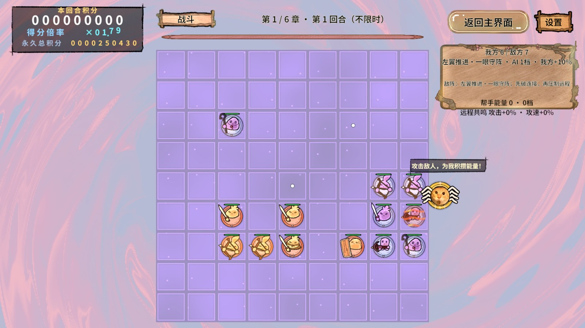
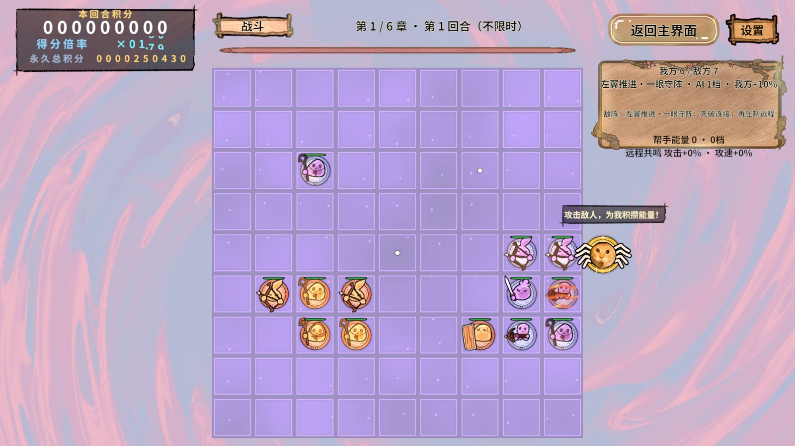

修改范围
BattleHudPanel停止刷新该常驻说明并移除专属缓存；BattleHudPanel.prefab的assistText与assistPlate默认隐藏。GameArtMigration与鸦鸦局部制作配方也保持隐藏，避免重建后重新出现。
保留节点和底图引用，兼容Boss胜利面板制作配方读取Sprite；未改战斗增益、事件或胜负服务，动态事件弹幕仍按原逻辑运行。
真实验证
Unity 2022.3.15f1c1，1920×1080，StartScene正式入口、内存隔离进度、真实PC AssetBundle。执行rev_discover → rev_call记录现场并进入Play → rev_run经选关、81格就绪、准备完成、布阵和开战，验证两个节点存在且active=false、活动对象中没有assist提示。返回大厅后重新进入再次断言通过。
最终计划全部步骤和finally通过，Console错误0；结束Play并解除隔离，恢复StartScene编辑态。初轮所有显示断言通过，但清理脚本重复请求返回已在大厅而被拒绝；去掉重复收尾后完整重跑通过。
Unity编译通过，1749字符字库输入检查通过；资源依赖无错误，76个PC包构建并复制完成，发布目录155个非meta文件与构建输出SHA256一致。保留原meta GUID。
真实画面


框架结论与覆盖
现有RevUI生命周期和项目制作配方能支持隐藏单个HUD说明，无需修改Revolution快照；真实AB验证预制体状态能正确落屏，并在重入后保持。此项为静态显示移除，截图用于画面证据；没有新增动态表现或性能结论。
未执行独立Player或手机验证。原始JSON与PNG位于.codex/work/hide-assist-hint，不生成ZIP或Profiler录制。